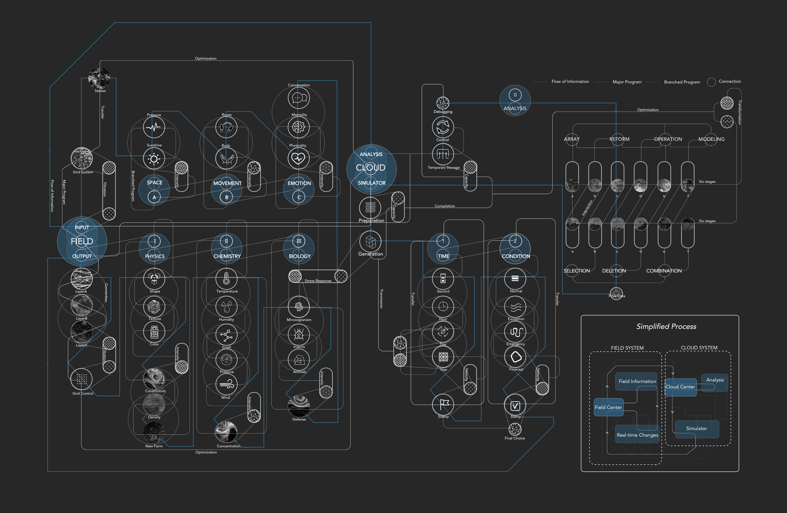
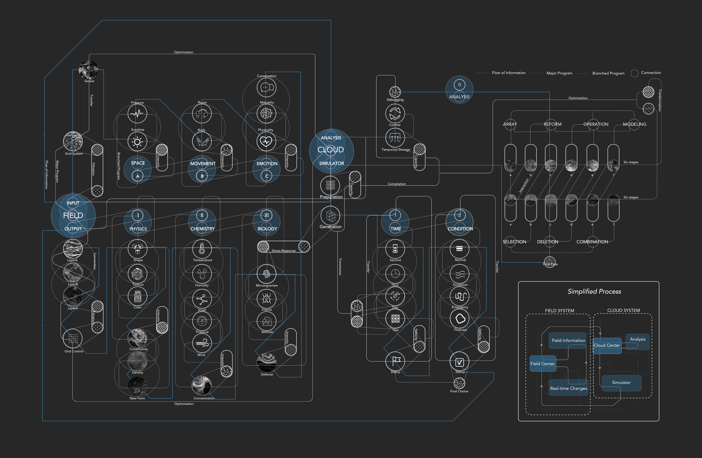

The Forth Nature
Landscape theorist John Dixon Hunt identified the wilderness and cultivation as “first nature”, and cultural landscape as “second nature”. Hunt also offered the term “third nature” for places such as gardens that have been designed with specific aesthetic intentions.
Now hundreds of years have passed the traditional park has been unable to meet the ever-changing human needs. The birth of the "fourth nature" seems imminent, that is, the landscape is excepted to get rid of the human domination, and embraced autonomy.
The new centural park can transform itself automatically to adapt various external changes without any human intervention. The realization of all these mechanisms are based on a neural-intelligent system. Imitated from the human nervous system, the park has constructed a powerful and extensive neural network. Tens of billions of nerve endings scatter in the park, collecting data and uploading to the clouds for analysis. The cloud system will make decisions based on heterogeneous information. It then sends the results back to the site, which will change themselves dynamically in real time. In this way, the whole neural-intelligent system can dramatically extend the life span of the park and satisfy people at any moment.
In the history of human kind, we have long pursued the power of technology and innovation. Now, however, the reality has shifted to the other end, we can never see a buzzing bee or a wandering leaf in this “perfect park”. Standing in the face of such perfection that lasts and endures, will we miss the pure nature that breaks and degrades? Is it really the best of times or the worst of times?

 
